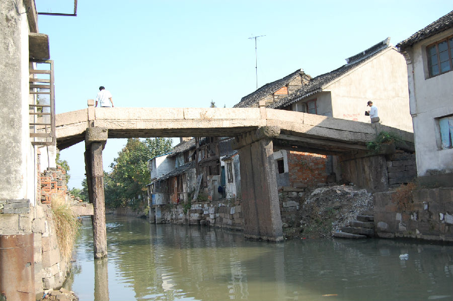
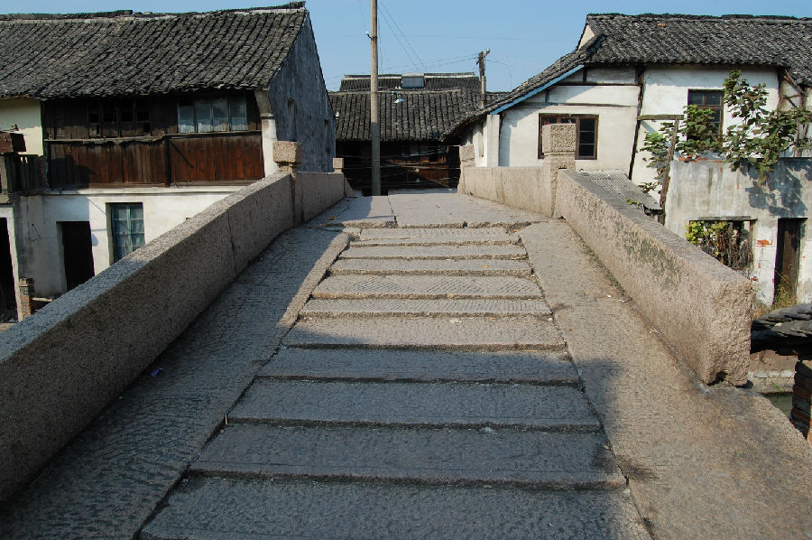

嘉兴市文物保护网 · 市级文物保护点 · 2020-11-02 · 原文


天竺桥位于嘉兴市秀洲区新塍镇凤舞社区，又名观音桥、解放桥（据当地居民姚荣根介绍，此桥俗称观音桥，因桥上有观音庙得名，解放后庙被拆除，并在两侧桥栏外刻“解放桥”）。根据介绍和形制判断为清代建造。桥南北横跨市河，系三孔有栏石板桥，全长32.23米，桥面宽2.7米，当中桥面由5块石板并列组成，两侧有石栏板，上有6个望柱，桥底距水面高度4.2米，南落坡12级、北落坡10级。桥面石板下方铺有木板，墩间架有木梁。现东西侧桥额有两个，上为“解放桥”、下为“重建天竺桥”，另桥落坡处一石板上刻有“重建定中桥”、“里人公建”等字，桥联处文字已风化不可辨。桥身刻有蟠螭、花卉等纹。天竺桥建筑形制较大，建造工艺特殊，同时一桥三名，在嘉兴石板桥中较为少见，具有较高的历史和科学价值。2002年公布为嘉兴市文物保护点。